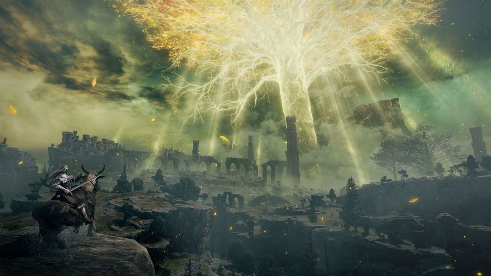
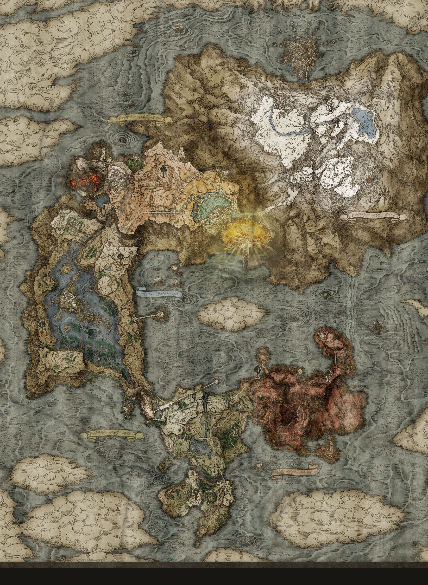
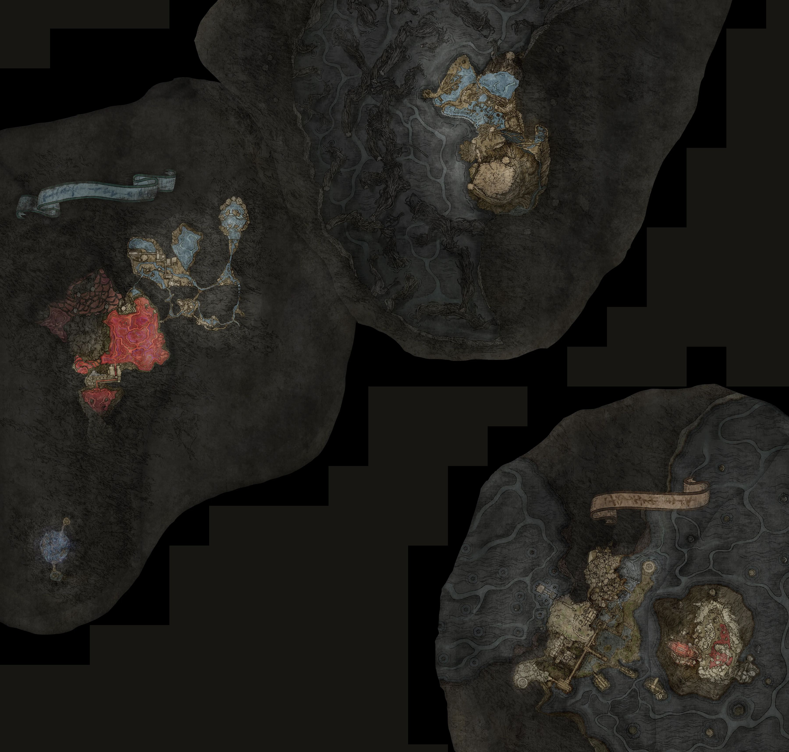
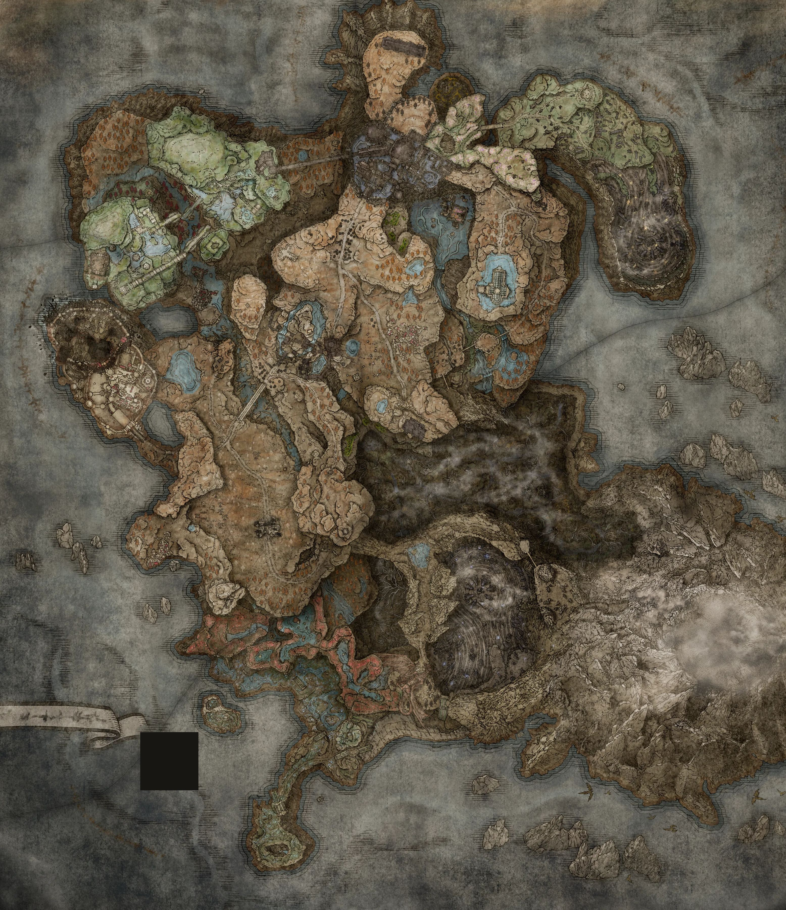

Avant de partir
Introduction : bienvenue dans l'Entre-Terre
L'essentiel
- Le jeu : un action-RPG en monde ouvert de FromSoftware ; tu explores l'Entre-Terre à cheval, puis le Royaume des ombres de l'extension Shadow of the Erdtree.
- À ne pas rater dès le début : le Couteau à aiguiser, la Cloche mande-esprit de Renna et le Nécessaire de fabrication de Kalé (partie 01).
- Le choix : la classe de départ compte peu ; la Vigueur compte beaucoup.
- Avant de partir : lis « Les six réflexes » et « Les erreurs de débutant ».

L'Arbre-Monde domine l'Entre-Terre

Jaquette © Bandai Namco Entertainment / FromSoftware. Guide non officiel.
La carte interactive
Zoome, déplace-toi et touche un repère : il t'emmène à l'endroit du guide qui en parle.



· molette ou pincement pour zoomer, glisser pour se déplacer ; touche un repère pour voir ce que c'est et ouvrir la partie du guide qui en parle.
Cartes interactives
Dans les tableaux de butin, les objets suivis de Voir sur la carte ouvrent la carte interactive de Map Genie (site en anglais) pile sur leur emplacement, le plus souvent avec une capture d'écran. Il faut du réseau pour ouvrir la carte. Cartes complètes : l'Entre-Terre · le Royaume des ombres. Au début de l'Itinéraire des parties, La zone en images renvoie en plus à une soluce illustrée en français quand il en existe une.
Objectif
Te donner ce qu'il faut savoir avant de partir : comment ce guide est construit, comment fonctionnent les systèmes d'Elden Ring (statistiques, armes, magie, fioles, artisanat), et les erreurs qui coûtent le plus cher pendant les premières heures.
Si tu n'as jamais joué à un jeu FromSoftware, lis au moins « Les six réflexes » et « Les erreurs de débutant ». Le reste attendra tes premières questions.
Ce qu'est Elden Ring
Elden Ring est un action-RPG en monde ouvert de FromSoftware, sorti en 2022. Tu incarnes un Sans-éclat, revenu dans l'Entre-Terre pour devenir Seigneur d'Elden.
- Un monde ouvert en grandes régions (Nécrolimbe, Liurnia, Caelid, le plateau d'Altus, les Cimes des Géants…), parcouru sur le dos de Torrent.
- Des donjons légendaires, comme le Château de Voilorage ou l'Académie de Raya Lucaria, gardés par des Semi-Dieux qui laissent une Rune majeure.
- Des dizaines de donjons mineurs : catacombes, grottes, tunnels, tombes des héros.
- Des quêtes de PNJ sans journal : elles avancent quand tu passes au bon endroit au bon moment, et certaines échouent si tu avances trop vite.
- L'extension Shadow of the Erdtree ouvre le Royaume des ombres, avec sa propre bénédiction (parties 33 à 42).
La bonne nouvelle : Elden Ring laisse presque toujours le choix. Un boss te bloque ? Va ailleurs, reviens plus fort.
Comment lire ce guide
- Les parties 01 à 27 suivent l'ordre de progression conseillé, région par région.
- Les parties 28 à 32 rassemblent ce qui traverse tout le jeu : quêtes de PNJ, énigmes, collectibles, équipement essentiel.
- Les parties 33 à 42 couvrent l'extension Shadow of the Erdtree.
- La partie 99 contient l'index, les manquables et la check-list finale.
Les deux symboles :
- ⚠️ Attention : un point de non-retour ou un piège à ne pas rater.
- ⏳ Manquable : quelque chose qui peut se perdre si tu tardes.
Le niveau de spoilers est léger : on nomme les boss et les lieux, on ne raconte pas l'histoire.
Les six réflexes à prendre tout de suite
- Explore avant de te battre. Chaque site de grâce est un point de retour, chaque coffre un niveau économisé. Si un ennemi te bloque, il y a presque toujours un autre chemin.
- Reste sur Torrent en extérieur. Son double saut sert d'esquive, et beaucoup de combats de plaine se gagnent en frappant au galop.
- Monte la Vigueur. C'est elle qui transforme « je meurs en deux coups » en « j'ai droit à l'erreur ».
- Ne t'obstine pas sur un boss. Trois essais sans progrès : va ailleurs, gagne des niveaux, améliore ton arme, reviens.
- Améliore une seule arme. Les pierres de forge sont rares au début : une arme +6 vaut mieux que trois armes +2.
- Parle deux fois à chaque PNJ. La deuxième réplique cache souvent un objet ou la suite d'une quête.
Les systèmes essentiels
Les huit statistiques
| Statistique | Ce qu'elle augmente | À qui elle sert |
|---|---|---|
| Vigueur | PV, défense contre le feu, immunité (poison, putréfaction) | Tout le monde, en priorité |
| Esprit | PC, focalisation (sommeil, folie) | Mages, cendres d'invocation et cendres de guerre |
| Endurance | Endurance, charge d'équipement, robustesse (saignement, gel) | Tout le monde |
| Force | Dégâts des armes qui en dépendent, défense physique | Armes lourdes |
| Dextérité | Dégâts des armes qui en dépendent, vitesse d'incantation ; elle réduit les dégâts de chute et t'évite de tomber de Torrent | Armes rapides, arcs |
| Intelligence | Puissance des sorcelleries, défense magique | Mages |
| Foi | Puissance des incantations | Prêtres, builds de feu et de sacré |
| Ésotérisme | Découverte d'objets, certaines altérations (saignement, putréfaction), défense sacrée | Builds de saignement |
Le build, c'est la répartition de tes statistiques et de ton équipement autour d'un style de jeu. Deux règles à retenir :
- La charge d'équipement : sous 70 % de ta charge maximale, ta roulade reste normale ; au-delà, elle devient lente et courte. La charge maximale dépend de l'Endurance.
- À deux mains, ta Force compte pour 1,5 fois sa valeur : une arme qui demande 15 en Force se manie avec 10 à deux mains.
Les dix classes de départ
Le choix pèse peu : l'équipement de départ se retrouve ailleurs, et l'écart de statistiques s'efface en quelques dizaines de niveaux.
| Classe | Niveau | Points forts | Pour qui |
|---|---|---|---|
| Vagabond | 9 | Vigueur 15, Force 14, Dextérité 13 | Le départ le plus solide au corps-à-corps |
| Guerrier | 8 | Dextérité 16 | Coups rapides, deux armes |
| Héros | 7 | Force 16, Vigueur 14 | Taper fort, simplement |
| Bandit | 5 | Ésotérisme 14, arc court | Distance et saignement |
| Astrologue | 6 | Intelligence 16, Esprit 15 | Le mage pur, mais fragile (Vigueur 9) |
| Prophète | 7 | Foi 16, commence avec Soin | Les incantations |
| Samouraï | 9 | Dextérité 15, Endurance 13, katana | Un excellent départ pour débuter |
| Prisonnier | 9 | Dextérité 14, Intelligence 14 | Épée et sorts |
| Confesseur | 10 | Foi 14, correct au corps-à-corps | Hybride arme et foi |
| Misérable | 1 | Toutes les statistiques à 10 | Ceux qui savent où ils vont |
Les deux classes du Tarnished Pack (mise à jour 1.17)
Depuis la mise à jour 1.17 (27 août 2026), un petit contenu payant, le Tarnished Pack, ajoute deux classes de départ, trois apparences pour Torrent et deux invasions. Il est vendu à part sur PC, PlayStation et Xbox, et il est inclus d'office dans l'édition Tarnished Edition de la Nintendo Switch 2.
⚠️ nom français à vérifier en jeu : les noms de ce contenu sont écrits ici en anglais.
| Classe | Niveau | Points forts | Équipement de départ |
|---|---|---|---|
| Idus Knight | 7 | Dextérité 15, Force 13, Esprit 12, Foi 11 | Idus Sword (grande épée légère, compétence Impaling Thrust), Silver Grooved Shield (bouclier moyen), ensemble Silver Grooved |
| Heavy Knight | 10 | Endurance 17, Force 15, Vigueur 14 | Hefty Scimitar (grand cimeterre, compétence Spinning Slash), ensemble Steel |
- Idus Knight : un chevalier léger, à la dextérité, avec un peu de foi pour apprendre tôt un sort de soin.
- Heavy Knight : un chevalier lourd, à la force, taillé pour encaisser grâce à sa grosse Endurance.
- Leur équipement s'obtient aussi sans choisir la classe :
- Hefty Scimitar : chez le marchand nomade de l'est de Nécrolimbe, près du Fort Haight (partie 02) ;
- Silver Grooved Shield : chez un marchand nomade du nord-est de Liurnia, au nord de l'église appelée Bellum Church en anglais, sur la Chaussée martiale (partie 06) ;
- Idus Sword : au sol, au bord du lac de Liurnia, entre la source spirituelle du sud du lac et la stèle de la Carte : Liurnia orientale (partie 05) ;
- les deux ensembles d'armure : emplacements inconnus pour l'instant.
- Les apparences de Torrent (Spectral Steed Attire) : Tree Sentinel dans un coffre du Château de Voilorage (partie 04), Silver of Caria en Liurnia, Funereal Night sur le Plateau d'Altus. Une fois l'une d'elles en poche, choisis l'apparence de Torrent depuis le menu d'un site de grâce. Les emplacements exacts des deux dernières restent à préciser.
- Les deux invasions de PNJ : l'une en Caelid, l'autre à Leyndell, capitale royale, qui n'a plus lieu une fois la ville devenue capitale des cendres. Les envahisseurs et leurs récompenses restent à préciser.
Les armes et leur amélioration
- Les armes ordinaires montent jusqu'à +25 avec des pierres de forge ; les armes spéciales, qui ont leur propre compétence, montent jusqu'à +10 avec des pierres de forge sombres.
- Le forgeron Hewg, au Bastion de la Table ronde, fait les améliorations. Le Royaume des ombres n'a pas de forgeron : retourne voir Hewg.
- Les Perles de mineur de pierre de forge, confiées aux Servantes jumelles, leur font vendre des pierres de forge (partie 31).
Les cendres de guerre et les affinités
- Une cendre de guerre remplace la compétence d'une arme ordinaire et peut changer son affinité (Lourd, Aiguisé, Sacré, Froid, Saignement…), donc les statistiques dont elle dépend.
- Il faut le Couteau à aiguiser pour les poser, à n'importe quel site de grâce (partie 01). Les plus utiles sont en partie 32.
Les cendres d'invocation
- La Cloche mande-esprit, que Renna te remet la nuit à l'Église d'Elleh une fois Torrent obtenu, permet d'invoquer des esprits près des stèles de renaissance.
- Roderika les améliore au Bastion de la Table ronde (partie 04).
Les fioles
- Deux fioles : les larmes écarlates (PV) et les larmes céruléennes (PC). Tu répartis les charges entre les deux à n'importe quel site de grâce.
- Les Graines dorées ajoutent des charges, jusqu'à 14 ; les Larmes de vie augmentent l'effet de chaque gorgée (partie 31).
- La Fiole de salut miraculeux se remplit de deux larmes de mélange pour combiner des effets ; l'extension en ajoute plusieurs (partie 42).
La magie
- Les sorcelleries demandent de l'Intelligence et un bâton d'éclat.
- Les incantations demandent de la Foi, parfois de l'Ésotérisme, et un sceau sacré.
- Un sort acheté reste acquis, mais il faut le mémoriser à un site de grâce, dans la limite de tes emplacements de mémoire.
Les altérations d'état
| Altération | Ce qu'elle fait | La statistique qui protège |
|---|---|---|
| Saignement | Gros dégâts d'un coup | Robustesse (Endurance) |
| Gel | Dégâts et vulnérabilité accrue | Robustesse (Endurance) |
| Poison | Dégâts dans le temps | Immunité (Vigueur) |
| Putréfaction écarlate | Dégâts dans le temps, très violents | Immunité (Vigueur) |
| Sommeil | Te met hors jeu quelques secondes | Focalisation (Esprit) |
| Folie | Gros dégâts et perte de PC | Focalisation (Esprit) |
Elles marchent aussi dans l'autre sens : le saignement et la putréfaction écarlate font partie des meilleures armes contre les gros boss.
L'artisanat
- Le Nécessaire de fabrication se vend chez Kalé, à l'Église d'Elleh : il sert à fabriquer flèches, pots et remèdes (partie 01).
- Les manuels débloquent les recettes ; ils s'achètent ou se ramassent, et l'extension en ajoute des dizaines (partie 42).
La progression et les Runes majeures
- Chaque grand boss laisse un Souvenir, à échanger chez Enia, au Bastion de la Table ronde.
- Les Runes majeures s'activent à leur Tour divine (partie 30), puis avec un Arc runique.
- Deux Runes majeures ouvrent la porte de Leyndell, la capitale royale (partie 18).
- Le Médaillon de Rold ouvre les Cimes des Géants ; le Médaillon secret de l'Arbre-Sacré, en deux moitiés, ouvre les Champs enneigés consacrés (parties 21 et 22).
Les erreurs de débutant
- Foncer droit sur Margit : fais d'abord le tour de Nécrolimbe, tu reviendras avec une arme bien meilleure.
- Répartir ses points partout : choisis une ou deux statistiques offensives, et monte la Vigueur en parallèle.
- Améliorer cinq armes à la fois : les pierres de forge sont rares avant Liurnia.
- Porter l'armure la plus lourde : au-delà de 70 % de charge, ta roulade ne te protège plus.
- Oublier les cendres d'invocation : la Cloche mande-esprit est disponible dès la première nuit avec Torrent.
- Garder ses runes sur soi : dépense-les avant une zone inconnue, car mourir deux fois de suite fait tout perdre.
- Avancer trop vite : certaines quêtes échouent si tu bats un boss trop tôt ; les parties 28, 29 et 41 disent quand.
- Négliger les altérations : un ennemi qui résiste à ton épée s'effondre souvent sous le saignement ou le gel.
- Ne jamais sauter ni parer : les balayages au sol s'évitent d'un saut, et une parade ouvre un coup critique.
- Attendre d'être « prêt » : un boss trop dur se règle souvent en allant explorer ailleurs.
Les dépendances de version
- Ce guide décrit la version 1.17 du jeu (27 août 2026), extension comprise. Quand une information dépend d'un correctif, c'est précisé sur place.
- Ce que la 1.17 change pour tout le monde, avec ou sans le Tarnished Pack : un équilibrage d'armes, de boucliers, de sorts et de compétences (partie 32), et, dans le Royaume des ombres, quelques objets au sol et récompenses d'ennemis puissants remplacés par de meilleurs (partie 33).
- Le Tarnished Pack (classes, apparences de Torrent, invasions) est présenté plus haut, avec les classes de départ.
- L'extension s'ouvre après Radahn le Fléau des astres et Mohg, seigneur du sang (partie 33).
- Dans le Royaume des ombres, ton niveau compte toujours, mais la bénédiction de l'Arbre-Occulte (esquilles) et celle des cendres vénérées font la plus grosse différence (partie 33).
Check-list des premières heures
- Torrent obtenu auprès de Melina
- Cloche mande-esprit reçue de Renna, la nuit, à l'Église d'Elleh
- Couteau à aiguiser trouvé
- Nécessaire de fabrication acheté à Kalé
- Carte : Nécrolimbe occidentale ramassée
- Une seule arme choisie et améliorée
- Charge d'équipement sous 70 %
- Vigueur montée en priorité
- Premières Graines dorées utilisées
- Bastion de la Table ronde débloqué (Hewg, Enia, Roderika)